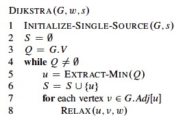
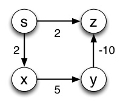
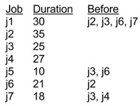

Suppose we have modified the Relax procedure to return TRUE if it changed an edge weight and FALSE otherwise. This enables us to write a better encapsulated version of Bellman-Ford, shown below.
Bellman-Ford(G,w,S)
1 Initialize-Single-Source(G,s)
2 for i = 1 to |G.V| - 1
3 for each edge (u,v) in G.E
4 Relax(u,v,w)
5 for each edge (u,v) in G.E
6 if Relax(u,v,w)
7 return FALSE
8 return TRUE
But Bellman-Ford still does unnecessary work if all shortest paths are significantly shorter than |G.V| - 1. Modify the code above to exit the algorithm early with the correct value if there will be no further changes. Do this by modifying Bellman-Ford alone: don't change the Relax procedure.
Dijkstra's algorithm assumes (based on the triangle inequality) that once a vertex v is moved to S, v.d = δ(s, v). It is not supposed to be able to handle graphs with negative weight edges, such as the graph shown below, because they violate the triangle inequality.
 
But nothing in Dijkstra's algorithm says lines 7-8 can't update weights of vertices that are already in S. If you simulate the algorithm, you will see that when vertex y is dequeued, vertex z (which is already in S) should be updated to its correct distance δ(s, z). Why won't this always happen? Can you modify the graph to be one for which v.d ≠ δ(s, v) at the end for some v?
The parallel scheduling problem is to take a set of interdependent jobs with known execution time and determine when to schedule each job so that the last job finishes as soon as possible while respecting the interdependency constraints.
We can model such problems using weighted DAGs as follows:

But we need an algorithm to do the scheduling. Rather than write an algorithm from scratch, we will see how we can do this with DAG-Shortest-Paths. Some adjustment may be required to make the data structure fit the algorithm.
Some jobs are shown in the table to the right. The first job should start at time 0. Your task is to schedule the jobs such that they are all completed in the minimum amount of time while respecting the constraints. You will complete this on your homework: here we will ensure we understand the approach.
(a) Do we need to find the shortest paths or the longest paths, and why?
(b) Do you need to change the weights in any way to solve it with DAG-Shortest-Paths, and if so how and why?
(c) After running DAG-Shortest-Paths, how do you extract the solution, specifically the start time of each job and the time at which all jobs will be finished?